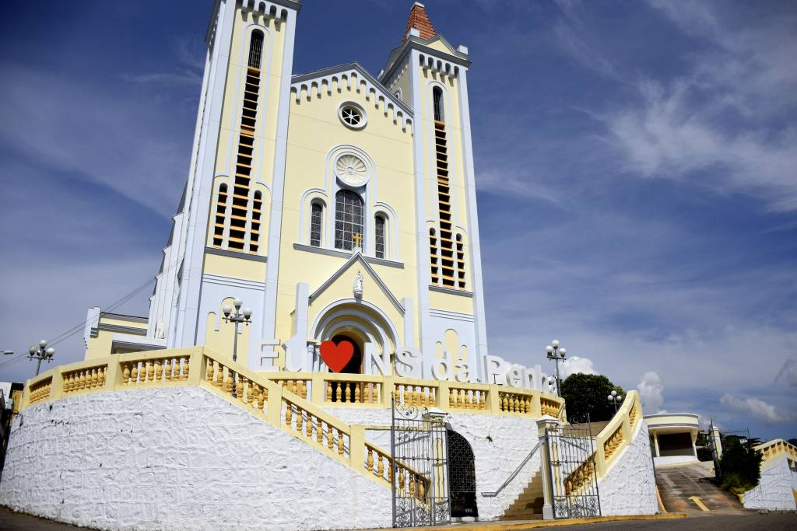
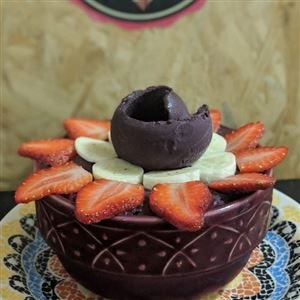
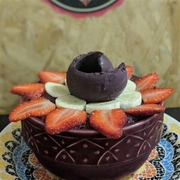

Igreja Matriz Nossa Senhora da Penha



A capela Mor de Alegre começou a ser construída em barro e madeira no ano de 1851, por iniciativa dos primeiros exploradores da região. Oficialmente, as terras do patrimônio de Alegre ficaram sobre responsabilidade da igreja com a condição de que esta doaria as terras à Nossa Senhora da Penha. Em 1868 o corpo da igreja foi edificado e a Capela Mor reparada. Novas ampliações foram realizadas entre 1914 e 1916 e também entre 1953 e 1968. Todas essas reformas resultaram num estilo barroco-gótico. A igreja de Nossa Senhora da Penha possui ainda magníficos vitrais retratando a vida de cristo e pinturas do Indiano Diwali.
Instagram da Igreja


 
